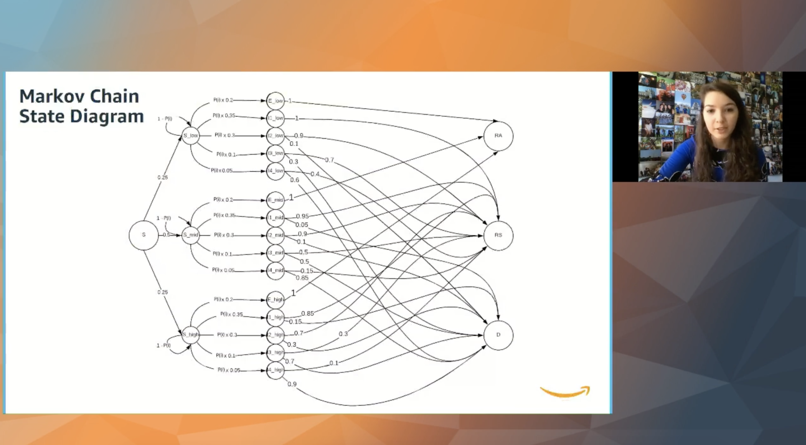

Projects
WiCS Hackathon Win
The Davidson College Women in Computer Science club (WiCS-formerly FiCSIT) sent an all-woman team to the 2018 Hackathon at Davidson College. We (Sarah Hancock, Natalie Kucher, Eleni Tsitinidi, and myself) were awarded “Best Overall Team” award based on both coding skills and presentation/communication skills to explain our project. Our task was to create a product that shared the experience of Davidson College with a designated audience. Our product was a web app with two Python programs on the back end to share the experience of a woman in STEM at Davidson with high school and college-age women interested in a career in STEM.


Read more about it here!
Pandemic Simulation
In the Spring of 2020, I, along with the other 2,000 students at Davidson College in Davidson, North Carolina, was told to go home because of a "novel coronavirus" in the United States. This semester, I was also taking Math Modeling. Soon after getting back to Maryland, I constantly saw different models and research about the ever-present pandemic and how we could control and stop the spread of COVID-19. I boldly asked my Math Modeling professor if I could switch my final project topic and try my hand at modeling virus spread in a pandemic setting. I worked with a partner (Caleb Grenko), and we successfully modeled Covid spread by the end of the semester! The project was an enjoyable way to research and learn about the world I was living in. Then, during my summer internship with Amazon Web Services, I was asked to present my simulation research live during "Intern Day" to thousands of interns and full-time employees. Below is me giving the presentation! (Video will be uploaded soon.)
